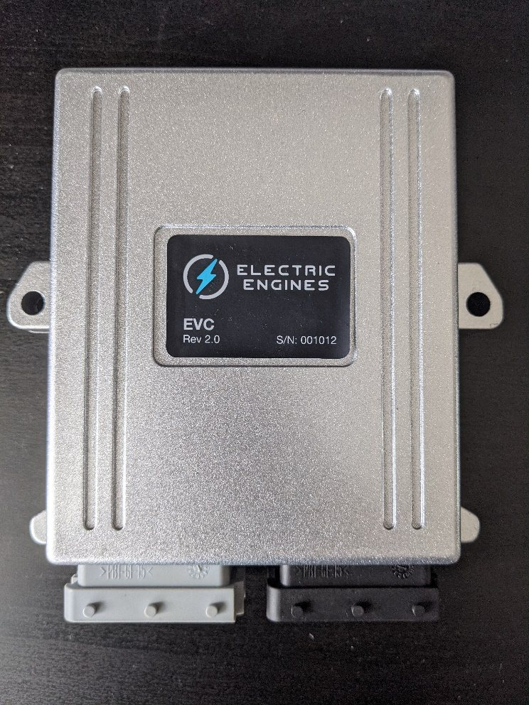
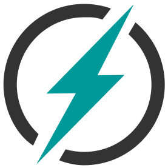
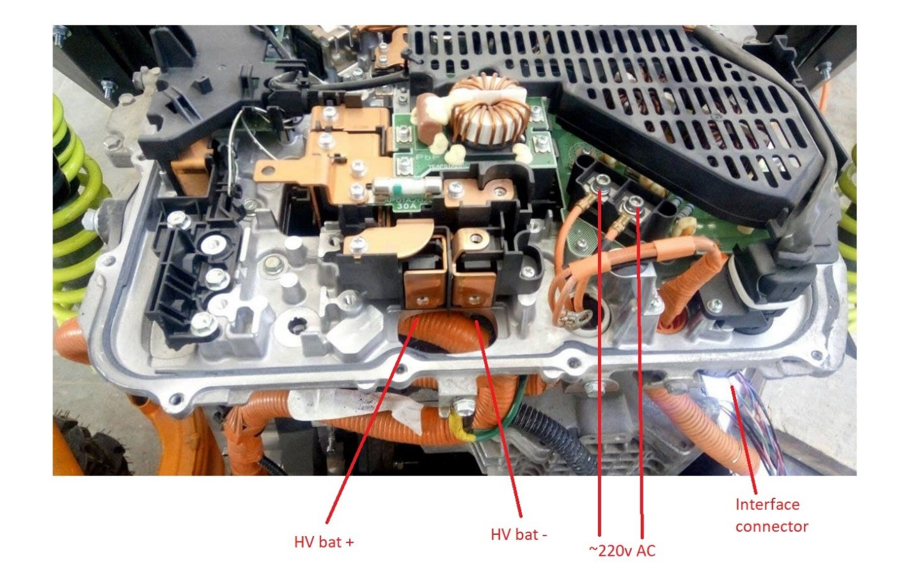
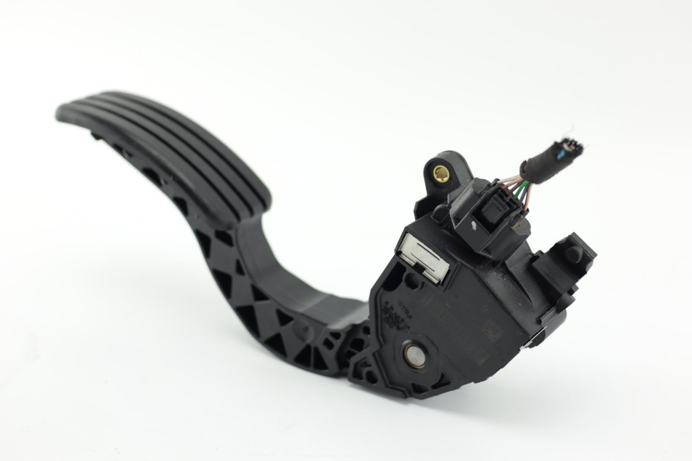
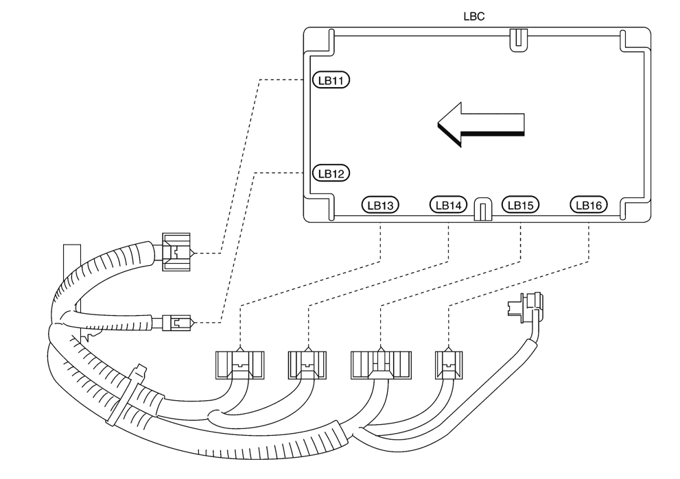
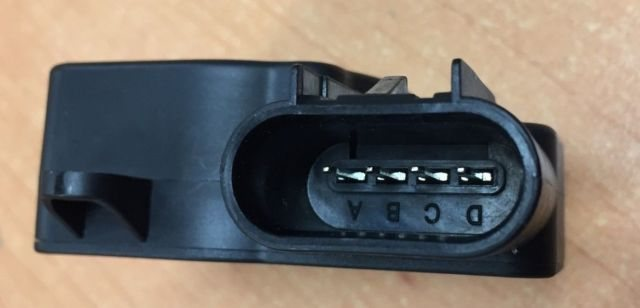
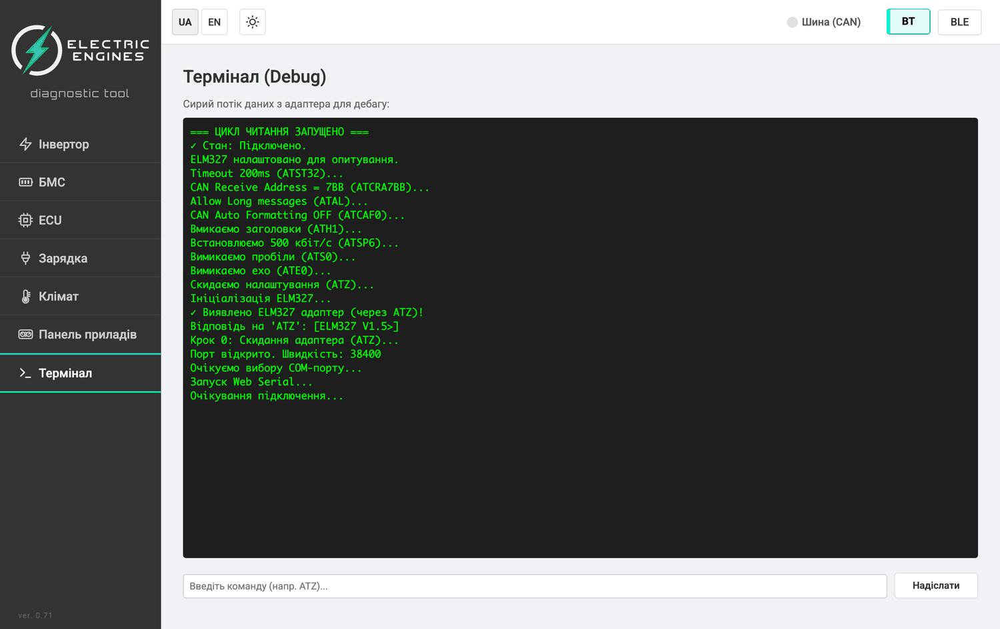
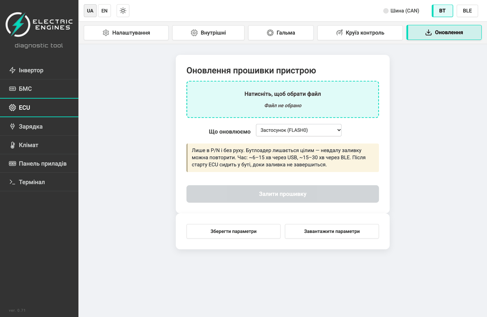
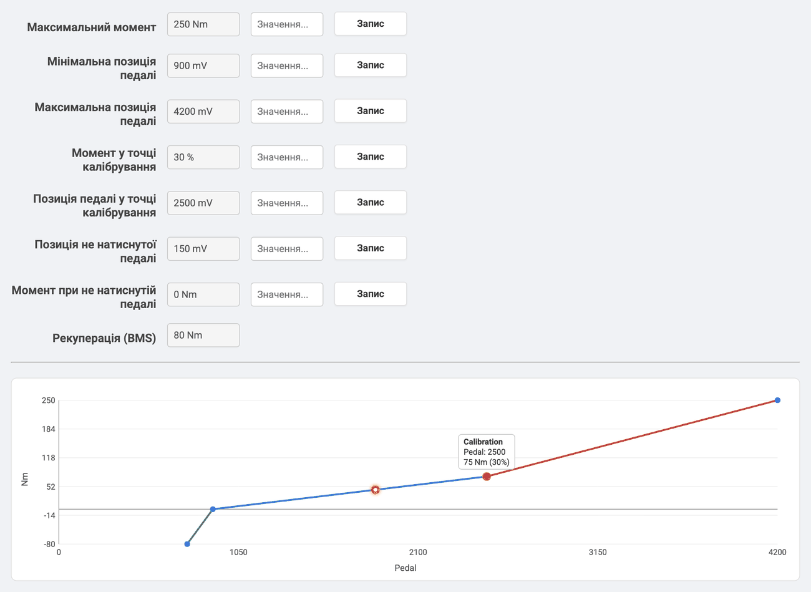
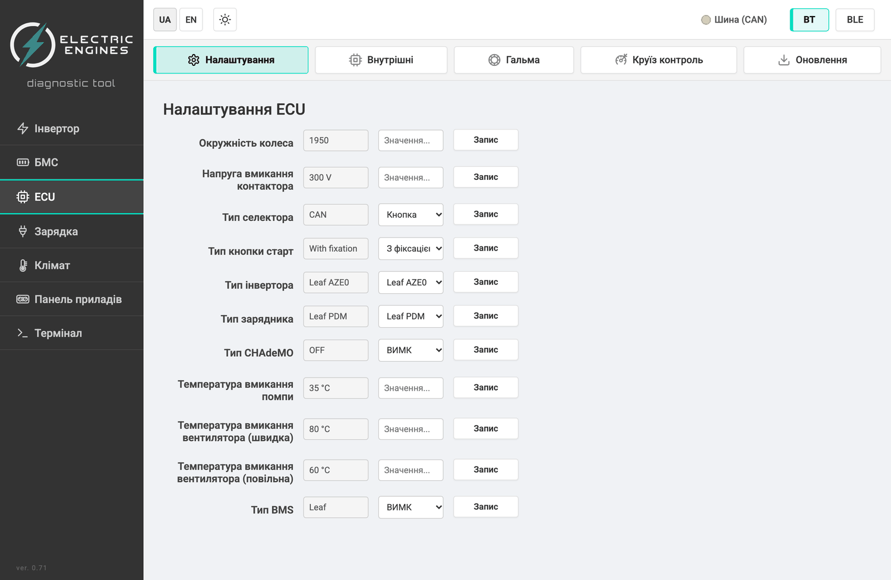

LEAF ECU
Посібник з підключення та налаштування контролера силової установки на компонентах Nissan Leaf для DIY-електромобілів.


1Загальна інформація
Leaf ECU — головний контролер силової установки: керує інвертором і контакторами тягової батареї, зарядом через PDM та CHAdeMO, охолодженням і периферією, а також обмінюється даними з BMS, дисплеєм і селектором по CAN-шинах.
1.1Роз'єми контролера
Контролер має два 24-контактні роз'єми:
- X1 — чорний;
- X2 — сірий.
На роз'ємах нанесено нумерацію пінів: ряди A–C і позиції 1–8. Піни можна вставляти у відповідний роз'єм ззаду корпусу, не розбираючи його, — достатньо спершу витягнути жовтий фіксатор спереду роз'єму.
Розпіновку зведено з монтажних схем цього посібника. У колонці «Схеми» — номери рисунків, де пін задіяно; наведіть на пін або рядок таблиці, щоб побачити його на роз'ємі. У тексті піни позначено як X1-B2 — наведіть на позначку, і з'явиться той самий роз'єм.
| Пін | Провід | Призначення | Схеми |
|---|---|---|---|
| X1-A1 | Датчик струму — вхід SIG 2 (на датчику LEM — канал 1, пін D) | 32 | |
| X1-A2 | Педаль акселератора — сигнал датчика 2 (у прошивці поки не використовується) | 17 | |
| X1-A3 | CAN0 Powertrain — High, 500 кбіт/с (інвертор, PDM, OBD2, дисплей, селектор) | 56 | |
| X1-A4 | CAN1 — High: BMS (без CHAdeMO) або CHAdeMO | 202439 | |
| X1-A5 | CAN2 — High: BMS, якщо CAN1 зайнятий CHAdeMO | ||
| X1-A6 | CAN3 — High: розширення | ||
| X1-A7 | Маса | 5632 | |
| X1-A8 | +12 В постійні від акумулятора (KL30) | 56 | |
| X1-B1 | Датчик струму — вхід SIG 1 (на датчику LEM — канал 2, пін A) | 32 | |
| X1-B2 | Педаль акселератора — сигнал основного датчика | 17 | |
| X1-B3 | CAN0 Powertrain — Low | 56 | |
| X1-B4 | CAN1 — Low | 202439 | |
| X1-B5 | CAN2 — Low | ||
| X1-B6 | CAN3 — Low | ||
| X1-B7 | Лінія PP зарядного порту до PDM (пін 29) | 6 | |
| X1-B8 | Вихід +12 В на котушку реле IGN | 6 | |
| X1-C1 | Вихід +5 В (педаль, датчики) | 1732 | |
| X1-C2 | Маса (педаль, датчики) | 17 | |
| X1-C3 | Реле вентилятора радіатора — висока швидкість | 37 | |
| X1-C4 | CHAdeMO вихід 0 — реле дозволу (Enable) | 39 | |
| X1-C5 | CHAdeMO вихід 1 — дозвіл заряду (пін 4 роз'єму) | 39 | |
| X1-C6 | Реле помпи охолодження | 37 | |
| X1-C7 | PP (proximity) від зарядного порту | 6 | |
| X1-C8 | +12 В від замка запалювання (KL15) | 6 |
| Пін | Провід | Призначення | Схеми |
|---|---|---|---|
| X2-A1 | +12 В після реле запалювання | ||
| X2-A2 | Реле вакуумного насоса підсилювача гальм | 14 | |
| X2-A3 | Котушка головного контактора HV− | 1524 | |
| X2-A4 | Котушка головного контактора HV+ | 1524 | |
| X2-A5 | Вхід кнопки Start (+12 В = натиснуто) | 13 | |
| X2-A6 | Сигнал датчика розрідження підсилювача гальм | 14 | |
| X2-A7 | Аналоговий вхід (через 10 кОм) — резерв | ||
| X2-A8 | CHAdeMO вхід 1 — сигнал послідовності 1 (пін 2) | 39 | |
| X2-B1 | Індикатор / IGN (D28) | ||
| X2-B2 | Силовий вихід через MOSFET — резерв | ||
| X2-B3 | Реле стоп-сигналу при рекуперації | 38 | |
| X2-B4 | Котушка реле передзаряду | 1524 | |
| X2-B5 | Вхід кнопки Drive (+12 В = увімкнено) | 13 | |
| X2-B6 | Не підключено (резерв) | ||
| X2-B7 | CHAdeMO вхід 0 — сигнал послідовності 2 (пін 10) | 39 | |
| X2-B8 | Вхід стоп-сигналу — контроль натискання гальма | 38 | |
| X2-C1 | Маса | ||
| X2-C2 | Реле вентилятора радіатора — знижена швидкість | 37 | |
| X2-C3 | Реле стоп-сигналу (дубль X2-B3) | ||
| X2-C4 | CHAdeMO вхід 2 — детектор підключення (пін 7) / AC-пістолет | 39 | |
| X2-C5 | Вхід кнопки Reverse (+12 В = увімкнено) | 13 | |
| X2-C6 | Маса | 20 | |
| X2-C7 | Вихід +5 В (датчики) | 1420 | |
| X2-C8 | Цифровий вхід (оптопара) — резерв |
1.2Розміри та кріплення
Контролер зібрано в алюмінієвому корпусі на два 24-контактні роз'єми. Корпус кріпиться двома болтами M6 через вушка на довгих сторонах.
- Монтажні отвори лежать на одній лінії поперек корпусу, відстань між ними — 125 мм.
- Перед торцем із роз'ємами залиште вільне місце: колодки вставляються й знімаються вздовж корпусу, джгуту потрібен запас на згин.
1.3CAN-шина
Усі проводи CAN-шини мають бути скручені у виту пару!
Контролер має чотири CAN-шини; основна — CAN0 Powertrain (X1-A3 / X1-B3), до неї підключаються інвертор, PDM, роз'єм OBD2, дисплей і селектор. BMS підключається до CAN1 (X1-A4 / X1-B4), а якщо CAN1 зайнятий CHAdeMO — до CAN2 (X1-A5 / X1-B5).
1.4Як читати схеми
Усі схеми цього посібника намальовано в одному стилі. Колір проводу означає його призначення, а не колір ізоляції:
| Колір | Призначення |
|---|---|
| Силові кабелі тягової батареї (ВН) | |
| +12 В — живлення від акумулятора / бортової мережі | |
| +12 В комутовані — від замка запалювання або через реле | |
| +5 В — живлення датчиків від контролера | |
| Маса | |
| / | CAN-H / CAN-L |
| Сигнали, що надходять на контролер (датчики, кнопки, пілот-лінії) | |
| Виходи контролера (керування котушками реле, світлодіодами) |
У реле контакти позначено 1–2, котушку — 4–3: на пін 4 подається керування від контролера, пін 3 — маса.
У веб-версії посібника схеми інтерактивні: натисніть провід — підсвітиться весь ланцюг і відкриється картка з переліком його з'єднань; натисніть пін або блок — відкриється вигляд його роз'єму з розпіновкою. Кнопка «Розгорнути» відкриває схему на весь екран із масштабуванням.
2Система живлення 12 В
Контролери 4-ї версії плати мають нову схему живлення. На контролер потрібно подавати:
- постійні +12 В від акумулятора;
- окремо +12 В від замка запалювання (IGN KEY).
Після вимкнення ключа запалювання контролер залишається увімкненим, доки мотор не зупиниться, після чого розмикає контактори батареї та вимикається сам.
Зарядний порт Type 1 від Leaf має резистор R5 прямо біля розетки, під гумовим чохлом. Його потрібно перенести й підключити, як показано на Рис. 6.
Також потрібно розірвати лінію PP між PDM і зарядним портом: PP порту йде на контролер (X1-C7), а на PDM контролер подає власний сигнал (X1-B7). Коли пістолет вставлено в зарядний порт, контролер вмикається й починає процес заряджання.
3Інвертор
Для підключення інвертора та PDM найкраще використати заводську проводку Leaf: видаліть із неї все зайве, залишивши роз'єми інвертора, PDM і резольвера мотора.
3.1Інвертор Leaf Gen 1 (ZE0)
| Пін | Провід | Призначення |
|---|---|---|
| 2 | Маса 12 В | |
| 8 | Маса 12 В | |
| 10 | +12 В від замка запалювання | |
| 4 | +12 В від замка запалювання | |
| 12 | CAN-H (Powertrain, CAN0) | |
| 19 | CAN-L (Powertrain, CAN0) | |
| 33 | +12 В постійні |
3.2Інвертор Leaf Gen 2 (AZE0)
Піни 46 і 48 — вхід постійного живлення +12 В, пін 42 — +12 В від замка запалювання, піни 47 і 49 — маса.
| Пін | Провід | Призначення | Схеми |
|---|---|---|---|
| 14 | EV SYSTEM CAN-H — CAN-H (Powertrain, CAN0) · провід L (синій) | 56 | |
| 15 | EV SYSTEM CAN-L — CAN-L (Powertrain, CAN0) · провід G (зелений) | 56 | |
| 17 | REZ_S2 — резольвер, обмотка S2 · провід P (рожевий) | ||
| 18 | REZ_S4 — резольвер, обмотка S4 · провід L (синій) | ||
| 19 | REZ_R1 — резольвер, збудження R1 · провід R (червоний) | ||
| 20 | REZ_S1 — резольвер, обмотка S1 · провід B (чорний) | ||
| 21 | REZ_S3 — резольвер, обмотка S3 · провід W (білий) | ||
| 27 | REZ_R2 — резольвер, збудження R2 · провід G (зелений) | ||
| 42 | IGN_SW — +12 В від запалювання · провід LG (світло-зелений) | ||
| 44 | TMGND — маса датчика температури тягового мотора · провід O (помаранчевий) | ||
| 45 | TM — датчик температури тягового мотора · провід Y (жовтий) | ||
| 46 | VB1 — +12 В постійні, живлення 1 · провід G (зелений) | ||
| 47 | VBGND1 — маса живлення 1 · провід B (чорний) | ||
| 48 | VB2 — +12 В постійні, живлення 2 · провід G (зелений) | ||
| 49 | VBGND2 — маса живлення 2 · провід B (чорний) |
3.3Інвертор Leaf Gen 3 (ZE1)
| Пін | Провід | Призначення |
|---|---|---|
| 1 | +12 В від замка запалювання (IGNSW) · провід червоний | |
| 2 | Резольвер S1 · провід світло-зелений | |
| 3 | Маса · провід чорний | |
| 5 | Резольвер R1 — збудження · провід фіолетовий | |
| 6 | Датчик температури мотора (MTEMP) · провід сірий | |
| 8 | Резольвер S3 · провід блакитний | |
| 9 | Маса · провід чорний | |
| 10 | Резольвер R2 — збудження · провід коричневий | |
| 12 | +12 В · провід червоний | |
| 13 | Датчик температури мотора (MTEMP) · провід сірий | |
| 15 | Резольвер S4 · провід синій | |
| 16 | Маса · провід чорний | |
| 17 | CAN-L (Powertrain, CAN0) · провід помаранчевий | |
| 18 | +12 В · провід червоний | |
| 20 | Резольвер S2 · провід жовтий | |
| 21 | Маса · провід чорний | |
| 22 | CAN-H (Powertrain, CAN0) · провід зелений |
Відповідність пінів Gen 2 і Gen 3 та кольори проводів заводської проводки:
| Сигнал | Gen 2 — пін | Gen 2 — колір | Gen 3 — пін | Gen 3 — колір |
|---|---|---|---|---|
| CAN-H | 14 | L — синій | 5 | L — синій |
| CAN-L | 15 | G — зелений | 11 | G — зелений |
| Резольвер S2 | 17 | P — рожевий | 9 | P — рожевий |
| Резольвер S4 | 18 | L — синій | 3 | L — синій |
| Резольвер R1 | 27 | G — зелений | 16 | G — зелений |
| Резольвер R2 | 19 | R — червоний | 22 | R — червоний |
| Резольвер S1 | 21 | W — білий | 14 | W — білий |
| Резольвер S3 | 20 | B — чорний | 19 | B — чорний |
| +12 В запалювання | 42 | LG — світло-зелений | 18 | LG — світло-зелений |
| Температура тягового мотора | 44 | O — помаранчевий | 20 | V — фіолетовий |
| Температура тягового мотора | 45 | Y — жовтий | 7 | Y — жовтий |
| +12 В | 46 | G — зелений | 1 | G — зелений |
| Маса | 47 | B — чорний | 4 | B — чорний |
| +12 В | 48 | G — зелений | 6 | G — зелений |
| Маса | 49 | B — чорний | 10 | B — чорний |
Джерела розпіновки Gen 3 нумерують піни по-різному: Рис. 9 — вигляд у роз'єм на корпусі інвертора, а таблиця вище перейшла з попередніх редакцій посібника, і номери пінів Gen 3 у ній інші. Крім того, назви обмоток резольвера Gen 2 у таблиці (R1/R2, S1/S3) переставлені відносно заводської таблиці Nissan (Рис. 8), хоча номери пінів і кольори проводів збігаються. Перед підключенням перевірте кожен пін за кольором проводу заводської проводки.
Проводи CAN-H і CAN-L мають бути скручені у виту пару.
4Модуль PDM
На PDM піни 30 і 29 (зарядного порту) підключаються до двопінового роз'єму на самому порту: білий провід — до білого, зелений — до коричневого (якщо використовується проводка Leaf). Для плати V4 лінію PP підключайте за Рис. 6.
Корпус модуля PDM обов'язково з'єднайте з масою — корпус є мінусовим виходом DC-DC перетворювача. Збоку модуля є шпилька — це вихід +12 В DC-DC перетворювача.
4.1Зарядний порт Type 1 (J1772)
Розетка автомобіля і пістолет зарядного кабелю — дзеркальні: ліворуч на рисунку розетка (вигляд спереду, з боку, куди вставляється пістолет), праворуч — пістолет (вигляд на торець). Позначка під кожним роз'ємом підказує, з якого боку вигляд.
Резистор R5 штатного порту Leaf (2,7 кОм) переносять і підключають за Рис. 6.
4.2Зарядний порт Type 2
Type 2 — трифазний роз'єм; однофазний PDM Leaf використовує лише L1, N, PE, CP і PP. Для порту Type 2 резистор R5 потрібно замінити на 4,7 кОм (Рис. 6).
| Пін | Провід | Призначення |
|---|---|---|
| L1 | L1 — фаза L1 (~230 В) → PDM | |
| L2 | L2 — фаза L2 (не використовується однофазним PDM) | |
| L3 | L3 — фаза L3 (не використовується однофазним PDM) | |
| N | N — нейтраль → PDM | |
| PE | PE — захисне заземлення → маса кузова | |
| CP | CP — Control Pilot → PDM (пін 30) | |
| PP | PP — Proximity Pilot → ECU X1-C7 |
Для порту Type 2 використовуйте зарядний кабель (пістолет) на 32 А — у його роз'ємі між PP і PE стоїть резистор 220 Ом. Кабелі інших номіналів мають інший резистор (13 А — 1,5 кОм, 20 А — 680 Ом, 63 А — 100 Ом) і з цією схемою підключення не підходять.
5Керування
5.1Кнопки селектора
Вибір напрямку руху (селектор) можливий кнопками або оригінальним селектором Nissan Leaf. Тип селектора потрібно вказати у веб-конфігураторі (ECU → Налаштування, див. 17.3).
- Кнопки Drive і Reverse — з фіксацією.
- Кнопка Start — з фіксацією або без (тактова); режим її роботи задається в конфігураторі.
Алгоритм роботи:
- Натискання Start — вмикаються контактори, інвертор готовий до роботи, селектор у нейтралі.
- Щоб почати рух, увімкніть Drive або Reverse.
- Якщо сигнали Drive і Reverse надходять одночасно, контролер переходить у нейтраль.
Для Drive і Reverse використовуйте 3-позиційний тумблер: середнє положення — нейтраль, крайні — Drive і Reverse.
5.2Вакуумний підсилювач гальм
Контролер може керувати вакуумним насосом підсилювача гальм. Для цього підключіть до контролера датчик розрідження, а насос — через реле.
Пороги напруги датчика, за яких насос вмикається та вимикається, налаштовуються у веб-конфігураторі на сторінці ECU → Гальма (значення вводяться в мВ).
6Силові реле (контактори)
Силові реле краще обирати з параметрами, близькими до тих, що стоять у Nissan Leaf.
Вони мають великий струм утримання котушки й потребують економайзера. Існують схожі контактори з уже вбудованою схемою зниження струму — такі використовувати можна.
Перерізи проводів на схемі:
| Провід | Переріз | Призначення |
|---|---|---|
| Силовий | 35 мм² | Основні кабелі тягової батареї |
| Передзаряд | 2,5 мм² | Ланцюг передзаряду через резистор 33 Ом |
| Керування | 0,75 мм² | Котушки реле |
Дотримуйтесь полярності під час підключення тягової батареї до PDM:

7Педаль акселератора
Сигнальний провід педалі підключається до піна X1-B2.
| Пін | Призначення |
|---|---|
| X1-B2 | Сигнал педалі — основний датчик |
| X1-A2 | Сигнал педалі — другий датчик (у прошивці поки не використовується) |
| X1-C1 | +5 В живлення педалі |
| X1-C2 | Маса педалі |
Напруга на сигнальному проводі має змінюватися в межах 0–5 В — перевірте це до підключення до контролера.
Якщо педаль має другий датчик — одразу підключіть його до X1-A2.
Можна використовувати педалі як із резистивними датчиками, так і з датчиками Холла.
Підключаючи педаль із датчиком Холла, перевірте полярність живлення датчика та де саме сигнальний вихід — інакше можна пошкодити датчик або стабілізатор 5 В у контролері.

| Пін | Провід | Призначення |
|---|---|---|
| 1 | Датчик 2 — сигнал | |
| 2 | Датчик 2 — живлення «+» | |
| 3 | Датчик 1 — живлення «+» | |
| 4 | Датчик 1 — сигнал | |
| 5 | Датчик 1 — маса «−» | |
| 6 | Датчик 2 — маса «−» |
Мінімальну та максимальну позиції педалі потрібно налаштувати у веб-конфігураторі (див. 17.2).
8BMS
Контролер підтримує BMS Chevrolet Volt Gen 1, Orion 2 і BMS Nissan Leaf.
8.1Chevrolet Volt Gen 1
BMS складається з 4 модулів-сателітів із позначками 1, 2/3 (два модулі) і 4. За допомогою сателітів батарею можна розділити на чотири окремі блоки.
Сателіти 2/3 мають перемичку, що задає позицію сателіта в батареї. Без неї сателіт не працюватиме.
Чорний роз'єм сателіта — інтерфейсний. CAN-шину та живлення рекомендуємо підключати за наведеною схемою, а не через заводську проводку Volt: у ній проводи проходять через сателіти послідовно (daisy-chain), що ускладнює діагностику.
| Пін | Провід | Призначення | Схеми |
|---|---|---|---|
| 6 | Перемичка 19–6 — задає положення сателіта 2/3 (група комірок 19–42) | 20 | |
| 9 | +5 В — живлення сателіта (ECU X2-C7) | 20 | |
| 10 | CAN-H (ECU X1-A4; з CHAdeMO — X1-A5) | 20 | |
| 11 | CAN-L (ECU X1-B4; з CHAdeMO — X1-B5) | 20 | |
| 12 | Маса (ECU X2-C6) | 20 | |
| 19 | Перемичка 19–6 — задає положення сателіта 2/3 (група комірок 19–42) | 20 | |
| 20 | Перемичка 20–21 — задає положення сателіта 2/3 (група комірок 43–66) | 20 | |
| 21 | Перемичка 20–21 — задає положення сателіта 2/3 (група комірок 43–66) | 20 |
Помаранчеві роз'єми сателітів призначені для балансувальних проводів комірок і датчиків температури. Ця BMS потребує датчиків температури NTC 10 кОм.
Є два типи цих роз'ємів: на 12 комірок (лише такі мають сателіти 2/3) і на 6 комірок (є на сателітах 1 і 4).
| Пін | Провід | Призначення |
|---|---|---|
| 1 | Сигнал датчика температури модуля (NTC 10 кОм) | |
| 2 | Low Reference — опорний провід датчика температури | |
| 3 | Сигнал датчика температури модуля (NTC 10 кОм) | |
| 4 | Low Reference — опорний провід датчика температури | |
| 5 | Не використовується | |
| 6 | Не використовується | |
| 7 | Не використовується | |
| 8 | Не використовується | |
| 9 | Сигнал напруги комірки (12) | |
| 10 | Сигнал напруги комірки (11) | |
| 11 | Сигнал напруги комірки (10) | |
| 12 | Сигнал напруги комірки (9) | |
| 13 | Сигнал напруги комірки (8) | |
| 14 | Сигнал напруги комірки (7) | |
| 15 | Сигнал напруги комірки (6) | |
| 16 | Сигнал напруги комірки (5) | |
| 17 | Сигнал напруги комірки (4) | |
| 18 | Сигнал напруги комірки (3) | |
| 19 | Сигнал напруги комірки (2) | |
| 20 | Сигнал напруги комірки (1) | |
| 21 | Low Reference — нижня точка вимірювання напруги комірок |
| Пін | Провід | Призначення |
|---|---|---|
| 1 | Сигнал датчика температури модуля (NTC 10 кОм) | |
| 2 | Low Reference — опорний провід датчика температури | |
| 3 | Не використовується | |
| 4 | Не використовується | |
| 5 | Не використовується | |
| 6 | Не використовується | |
| 7 | Не використовується | |
| 8 | Не використовується | |
| 9 | Сигнал напруги комірки (18) | |
| 10 | Сигнал напруги комірки (17) | |
| 11 | Сигнал напруги комірки (16) | |
| 12 | Сигнал напруги комірки (15) | |
| 13 | Сигнал напруги комірки (14) | |
| 14 | Сигнал напруги комірки (13) | |
| 15 | Сигнал напруги комірки (12) | |
| 16 | Не використовується | |
| 17 | Не використовується | |
| 18 | Не використовується | |
| 19 | Не використовується | |
| 20 | Не використовується | |
| 21 | Не використовується |
Послідовність розміщення сателітів можна змінити, але тоді карта комірок показуватиме позиції неправильно.
8.2Nissan Leaf (ZE0 / AZE0)
Можна використовувати BMS Nissan Leaf AZE0 і ZE0 (ZE1 — на тестуванні). BMS підключається по CAN-шині:
До BMS також мають бути підключені штатні датчики температури та датчик струму. Блокування (interlock) можна не підключати.
Батарея Leaf підключається до контролера через свій роз'єм LB1:
| LB1 | Куди |
|---|---|
| 5 | +12 В постійні |
| 4, 31 | +12 В від реле IGN |
| 1 / 2 | CAN-H X1-A4 / CAN-L X1-B4 (з CHAdeMO — X1-A5 / X1-B5) |
| 17 | X2-A4 — котушка контактора «+» (SYSTEM MAIN RELAY 1) |
| 14 | X2-A3 — котушка контактора «−» (SYSTEM MAIN RELAY 2) |
| 11 | X2-B4 — котушка реле передзаряду |
| 6, 7, 8, 10, 13, 16 | Маса |
Контактори й реле передзаряду стоять у розподільній коробці батареї, тож окремі силові реле з розділу 6 не потрібні — ECU керує штатними контакторами через ті самі виходи.
| Пін | Провід | Призначення | Схеми |
|---|---|---|---|
| 1 | CAN-H → LB1-1 → ECU X1-A4 (з CHAdeMO — X1-A5) | 24 | |
| 2 | Маса → LB1-8 (відгалуження ▽E) | 24 | |
| 3 | Маса → LB1-7 (відгалуження ▽D) | 24 | |
| 5 | +12 В від M/C RELAY через запобіжник No.74 10 A → LB1-31 (відгалуження ▽F) | 24 | |
| 6 | DETECT INPUT SIG — вхід кола блокування (від LB6-3) | 24 | |
| 7 | +12 В «PWR» через запобіжник No.57 10 A → LB1-4 | 24 | |
| 8 | DETECT OUTPUT SIG — вихід кола блокування (на LB2-1) | 24 | |
| 9 | VOLTAGE — живлення датчика струму (LB5 «V») | 24 | |
| 10 | CURRENT SIG — сигнал датчика струму (LB5 «S») | 24 | |
| 12 | +12 В «12 V BAT» через запобіжник No.79 20 A → LB1-5 | 24 | |
| 13 | CAN-L → LB1-2 → ECU X1-B4 (з CHAdeMO — X1-B5) | 24 | |
| 14 | Маса → LB1-6 (відгалуження ▽C) | 24 | |
| 15 | GROUND — маса датчика струму (LB5 «G») | 24 | |
| 18 | Лінія до ▽B (призначення на кресленні не вказане) | 24 | |
| 20 | Лінія до ▽A (призначення на кресленні не вказане) | 24 |
| Пін | Провід | Призначення | Схеми |
|---|---|---|---|
| 33 | Комірка 1 «+» (полюс «+» батареї) — відвід напруги (задній блок модулів RR) | 25 | |
| 34 | Комірки 2/3 — відвід напруги (задній блок модулів RR) | 25 | |
| 35 | Комірки 4/5 — відвід напруги (задній блок модулів RR) | 25 | |
| 36 | Комірки 6/7 — відвід напруги (задній блок модулів RR) | 25 | |
| 37 | Комірки 8/9 — відвід напруги (задній блок модулів RR) | 25 | |
| 38 | Комірки 10/11 — відвід напруги (задній блок модулів RR) | 25 | |
| 39 | Комірки 12/13 — відвід напруги (задній блок модулів RR) | 25 | |
| 40 | Комірки 14/15 — відвід напруги (задній блок модулів RR) | 25 | |
| 42 | Комірки 16/17 — відвід напруги (задній блок модулів RR) | 25 | |
| 43 | Комірки 18/19 — відвід напруги (задній блок модулів RR) | 25 | |
| 44 | Комірки 20/21 — відвід напруги (задній блок модулів RR) | 25 | |
| 45 | Комірки 22/23 — відвід напруги (задній блок модулів RR) | 25 | |
| 46 | Комірки 24/25 — відвід напруги (задній блок модулів RR) | 25 | |
| 47 | Комірки 26/27 — відвід напруги (задній блок модулів RR) | 25 | |
| 48 | Комірки 28/29 — відвід напруги (задній блок модулів RR) | 25 | |
| 50 | Комірки 1/2 — відвід напруги (задній блок модулів RR) | 25 | |
| 51 | Комірки 3/4 — відвід напруги (задній блок модулів RR) | 25 | |
| 52 | Комірки 5/6 — відвід напруги (задній блок модулів RR) | 25 | |
| 53 | Комірки 7/8 — відвід напруги (задній блок модулів RR) | 25 | |
| 54 | Комірки 9/10 — відвід напруги (задній блок модулів RR) | 25 | |
| 55 | Комірки 11/12 — відвід напруги (задній блок модулів RR) | 25 | |
| 56 | Комірки 13/14 — відвід напруги (задній блок модулів RR) | 25 | |
| 57 | Комірки 15/16 — відвід напруги (задній блок модулів RR) | 25 | |
| 58 | Комірки 17/18 — відвід напруги (задній блок модулів RR) | 25 | |
| 59 | Комірки 19/20 — відвід напруги (задній блок модулів RR) | 25 | |
| 60 | Комірки 21/22 — відвід напруги (задній блок модулів RR) | 25 | |
| 61 | Комірки 23/24 — відвід напруги (задній блок модулів RR) | 25 | |
| 62 | Комірки 25/26 — відвід напруги (задній блок модулів RR) | 25 | |
| 63 | Комірки 27/28 — відвід напруги (задній блок модулів RR) | 25 |
| Пін | Провід | Призначення | Схеми |
|---|---|---|---|
| 65 | Комірки 30/31 — відвід напруги (задній блок модулів RR) | 25 | |
| 66 | Комірки 32/33 — відвід напруги (задній блок модулів RR) | 25 | |
| 69 | Комірки 34/35 — відвід напруги (задній блок модулів RR) | 25 | |
| 70 | Комірки 36/37 — відвід напруги (задній блок модулів RR) | 25 | |
| 71 | Комірки 38/39 — відвід напруги (задній блок модулів RR) | 25 | |
| 72 | Комірки 40/41 — відвід напруги (задній блок модулів RR) | 25 | |
| 73 | Комірки 42/43 — відвід напруги (задній блок модулів RR) | 25 | |
| 74 | Комірки 44/45 — відвід напруги (задній блок модулів RR) | 25 | |
| 75 | Комірки 46/47 — відвід напруги (задній блок модулів RR) | 25 | |
| 76 | Комірка 48 «−» (до сервісного роз'єму) — відвід напруги (задній блок модулів RR) | 25 | |
| 77 | Комірки 29/30 — відвід напруги (задній блок модулів RR) | 25 | |
| 78 | Комірки 31/32 — відвід напруги (задній блок модулів RR) | 25 | |
| 80 | Комірки 33/34 — відвід напруги (задній блок модулів RR) | 25 | |
| 81 | Комірки 35/36 — відвід напруги (задній блок модулів RR) | 25 | |
| 82 | Комірки 37/38 — відвід напруги (задній блок модулів RR) | 25 | |
| 83 | Комірки 39/40 — відвід напруги (задній блок модулів RR) | 25 | |
| 84 | Комірки 41/42 — відвід напруги (задній блок модулів RR) | 25 | |
| 85 | Комірки 43/44 — відвід напруги (задній блок модулів RR) | 25 | |
| 86 | Комірки 45/46 — відвід напруги (задній блок модулів RR) | 25 | |
| 87 | Комірки 47/48 — відвід напруги (задній блок модулів RR) | 25 |
| Пін | Провід | Призначення | Схеми |
|---|---|---|---|
| 89 | Комірка 49 «+» (після сервісного роз'єму) — відвід напруги (передній лівий блок LH, через LB8-9) | 25 | |
| 90 | Комірки 50/51 — відвід напруги (передній лівий блок LH, через LB8-11) | 25 | |
| 91 | Комірки 52/53 — відвід напруги (передній лівий блок LH, через LB8-13) | 25 | |
| 92 | Комірки 54/55 — відвід напруги (передній лівий блок LH, через LB8-27) | 25 | |
| 93 | Комірки 56/57 — відвід напруги (передній лівий блок LH, через LB8-25) | 25 | |
| 94 | Комірки 58/59 — відвід напруги (передній лівий блок LH, через LB8-21) | 25 | |
| 95 | Комірки 60/61 — відвід напруги (передній лівий блок LH, через LB8-17) | 25 | |
| 96 | Комірки 62/63 — відвід напруги (передній лівий блок LH, через LB8-4) | 25 | |
| 97 | Комірки 64/65 — відвід напруги (передній лівий блок LH, через LB8-1) | 25 | |
| 99 | Комірки 66/67 — відвід напруги (передній лівий блок LH, через LB8-20) | 25 | |
| 100 | Комірки 68/69 — відвід напруги (передній лівий блок LH, через LB8-8) | 25 | |
| 101 | Комірки 70/71 — відвід напруги (передній лівий блок LH, через LB8-5) | 25 | |
| 102 | Комірки 72/73 — відвід напруги (передній лівий блок LH, через LB8-24) | 25 | |
| 103 | Комірки 74/75 — відвід напруги (передній правий блок RH, через LB7-40) | 25 | |
| 104 | Комірки 76/77 — відвід напруги (передній правий блок RH, через LB7-37) | 25 | |
| 105 | Комірки 78/79 — відвід напруги (передній правий блок RH, через LB7-53) | 25 | |
| 106 | Комірки 80/81 — відвід напруги (передній правий блок RH, через LB7-44) | 25 | |
| 107 | Комірки 82/83 — відвід напруги (передній правий блок RH, через LB7-41) | 25 | |
| 108 | Комірки 84/85 — відвід напруги (передній правий блок RH, через LB7-56) | 25 | |
| 110 | Комірки 49/50 — відвід напруги (передній лівий блок LH, через LB8-10) | 25 | |
| 111 | Комірки 51/52 — відвід напруги (передній лівий блок LH, через LB8-12) | 25 | |
| 112 | Комірки 53/54 — відвід напруги (передній лівий блок LH, через LB8-28) | 25 | |
| 113 | Комірки 55/56 — відвід напруги (передній лівий блок LH, через LB8-26) | 25 | |
| 114 | Комірки 57/58 — відвід напруги (передній лівий блок LH, через LB8-23) | 25 | |
| 115 | Комірки 59/60 — відвід напруги (передній лівий блок LH, через LB8-19) | 25 | |
| 116 | Комірки 61/62 — відвід напруги (передній лівий блок LH, через LB8-3) | 25 | |
| 117 | Комірки 63/64 — відвід напруги (передній лівий блок LH, через LB8-18) | 25 | |
| 118 | Комірки 65/66 — відвід напруги (передній лівий блок LH, через LB8-2) | 25 | |
| 119 | Комірки 67/68 — відвід напруги (передній лівий блок LH, через LB8-6) | 25 | |
| 120 | Комірки 69/70 — відвід напруги (передній лівий блок LH, через LB8-22) | 25 | |
| 121 | Комірки 71/72 — відвід напруги (передній лівий блок LH, через LB8-7) | 25 | |
| 122 | Комірки 73/74 — відвід напруги (передній правий блок RH, через LB7-38) | 25 | |
| 123 | Комірки 75/76 — відвід напруги (передній правий блок RH, через LB7-51) | 25 | |
| 124 | Комірки 77/78 — відвід напруги (передній правий блок RH, через LB7-39) | 25 | |
| 125 | Комірки 79/80 — відвід напруги (передній правий блок RH, через LB7-43) | 25 | |
| 127 | Комірки 81/82 — відвід напруги (передній правий блок RH, через LB7-55) | 25 | |
| 128 | Комірки 83/84 — відвід напруги (передній правий блок RH, через LB7-42) | 25 |
| Пін | Провід | Призначення | Схеми |
|---|---|---|---|
| 130 | Комірки 86/87 — відвід напруги (передній правий блок RH, через LB7-52) | 25 | |
| 131 | Комірки 88/89 — відвід напруги (передній правий блок RH, через LB7-36) | 25 | |
| 132 | Комірки 90/91 — відвід напруги (передній правий блок RH, через LB7-47) | 25 | |
| 133 | Комірки 92/93 — відвід напруги (передній правий блок RH, через LB7-45) | 25 | |
| 134 | Комірки 94/95 — відвід напруги (передній правий блок RH, через LB7-34) | 25 | |
| 135 | Комірка 96 «−» (полюс «−» батареї) — відвід напруги (передній правий блок RH, через LB7-49) | 25 | |
| 137 | Комірки 85/86 — відвід напруги (передній правий блок RH, через LB7-54) | 25 | |
| 138 | Комірки 87/88 — відвід напруги (передній правий блок RH, через LB7-50) | 25 | |
| 140 | Комірки 89/90 — відвід напруги (передній правий блок RH, через LB7-35) | 25 | |
| 141 | Комірки 91/92 — відвід напруги (передній правий блок RH, через LB7-33) | 25 | |
| 142 | Комірки 93/94 — відвід напруги (передній правий блок RH, через LB7-46) | 25 | |
| 143 | Комірки 95/96 — відвід напруги (передній правий блок RH, через LB7-48) | 25 |
| Пін | Провід | Призначення | Схеми |
|---|---|---|---|
| 1 | CAN-H (LBC 1) → ECU X1-A4 (з CHAdeMO — X1-A5) | 24 | |
| 2 | CAN-L (LBC 13) → ECU X1-B4 (з CHAdeMO — X1-B5) | 24 | |
| 4 | +12 В від реле IGN → LBC 7 («PWR») | 24 | |
| 5 | +12 В постійні → LBC 12 («12 V BAT») | 24 | |
| 31 | +12 В від реле IGN → LBC 5 | 24 | |
| 6 | Маса (LBC 14) | 24 | |
| 7 | Маса (LBC 3) | 24 | |
| 8 | Маса (LBC 2) | 24 | |
| 17 | Котушка SYSTEM MAIN RELAY 1, контактор «+» (LB3-1) ← ECU X2-A4 | 24 | |
| 16 | Маса котушки SYSTEM MAIN RELAY 1 (LB3-5) | 24 | |
| 14 | Котушка SYSTEM MAIN RELAY 2, контактор «−» (LB3-8) ← ECU X2-A3 | 24 | |
| 13 | Маса котушки SYSTEM MAIN RELAY 2 (LB3-12) | 24 | |
| 11 | Котушка реле передзаряду (LB3-2) ← ECU X2-B4 | 24 | |
| 10 | Маса котушки реле передзаряду (LB3-4) | 24 |
Штатний датчик струму Leaf (LB5) лишається підключеним до LBC: G — маса (LBC 15), V — живлення датчика (LBC 9), S — сигнал (LBC 10).
| Пін | Провід | Призначення | Схеми |
|---|---|---|---|
| 1 | Комірки 64/65 → LBC 97 | 25 | |
| 2 | Комірки 65/66 → LBC 118 | 25 | |
| 3 | Комірки 61/62 → LBC 116 | 25 | |
| 4 | Комірки 62/63 → LBC 96 | 25 | |
| 5 | Комірки 70/71 → LBC 101 | 25 | |
| 6 | Комірки 67/68 → LBC 119 | 25 | |
| 7 | Комірки 71/72 → LBC 121 | 25 | |
| 8 | Комірки 68/69 → LBC 100 | 25 | |
| 9 | Комірка 49 «+» (після сервісного роз'єму) → LBC 89 | 25 | |
| 10 | Комірки 49/50 → LBC 110 | 25 | |
| 11 | Комірки 50/51 → LBC 90 | 25 | |
| 12 | Комірки 51/52 → LBC 111 | 25 | |
| 13 | Комірки 52/53 → LBC 91 | 25 | |
| 17 | Комірки 60/61 → LBC 95 | 25 | |
| 18 | Комірки 63/64 → LBC 117 | 25 | |
| 19 | Комірки 59/60 → LBC 115 | 25 | |
| 20 | Комірки 66/67 → LBC 99 | 25 | |
| 21 | Комірки 58/59 → LBC 94 | 25 | |
| 22 | Комірки 69/70 → LBC 120 | 25 | |
| 23 | Комірки 57/58 → LBC 114 | 25 | |
| 24 | Комірки 72/73 → LBC 102 | 25 | |
| 25 | Комірки 56/57 → LBC 93 | 25 | |
| 26 | Комірки 55/56 → LBC 113 | 25 | |
| 27 | Комірки 54/55 → LBC 92 | 25 | |
| 28 | Комірки 53/54 → LBC 112 | 25 |
| Пін | Провід | Призначення | Схеми |
|---|---|---|---|
| 33 | Комірки 91/92 → LBC 141 | 25 | |
| 34 | Комірки 94/95 → LBC 134 | 25 | |
| 35 | Комірки 89/90 → LBC 140 | 25 | |
| 36 | Комірки 88/89 → LBC 131 | 25 | |
| 37 | Комірки 76/77 → LBC 104 | 25 | |
| 38 | Комірки 73/74 → LBC 122 | 25 | |
| 39 | Комірки 77/78 → LBC 124 | 25 | |
| 40 | Комірки 74/75 → LBC 103 | 25 | |
| 41 | Комірки 82/83 → LBC 107 | 25 | |
| 42 | Комірки 83/84 → LBC 128 | 25 | |
| 43 | Комірки 79/80 → LBC 125 | 25 | |
| 44 | Комірки 80/81 → LBC 106 | 25 | |
| 45 | Комірки 92/93 → LBC 133 | 25 | |
| 46 | Комірки 93/94 → LBC 142 | 25 | |
| 47 | Комірки 90/91 → LBC 132 | 25 | |
| 48 | Комірки 95/96 → LBC 143 | 25 | |
| 49 | Комірка 96 «−» (полюс «−» батареї) → LBC 135 | 25 | |
| 50 | Комірки 87/88 → LBC 138 | 25 | |
| 51 | Комірки 75/76 → LBC 123 | 25 | |
| 52 | Комірки 86/87 → LBC 130 | 25 | |
| 53 | Комірки 78/79 → LBC 105 | 25 | |
| 54 | Комірки 85/86 → LBC 137 | 25 | |
| 55 | Комірки 81/82 → LBC 127 | 25 | |
| 56 | Комірки 84/85 → LBC 108 | 25 |

РИС. 31Оригінальна заводська схемаПоказати оригінал
Схеми наведено для BMS AZE0, в інших версіях є незначні відмінності.
8.3Orion 2
Підтримується контролером. Детальний опис з'явиться в наступних редакціях посібника.
9Датчик струму
Датчик струму можна розмістити будь-де всередині батареї до силових реле.

10Система охолодження
Для нормальної роботи силової установки потрібна рідинна система охолодження.
Температури вмикання помпи та вентилятора задаються у веб-конфігураторі на сторінці ECU → Налаштування. Контролер може вмикати вентилятор на двох швидкостях:
- максимальній;
- зниженій — через резистор обмеження потужності.
Також можна керувати вентилятором через зовнішній ШІМ-контролер (без резистора).
11Стоп-сигнал (рекуперація)
Контролер може вмикати стоп-сигнал під час рекуперативного гальмування. Для цього встановіть реле паралельно до вимикача стоп-сигналу на педалі гальма.
Сигнал зі стоп-сигналу потрібно завести на пін X2-B8, щоб контролер бачив натискання педалі гальма.
12CHAdeMO
Якщо використовується PDM із портом CHAdeMO, можна задіяти його внутрішні силові контактори (CHAdeMO Power Relay + і −), вивівши від них окремі проводи. Якщо PDM не має порту CHAdeMO — потрібно встановити два додаткові силові контактори.
Реле дозволу (Enable Relay) встановлюється окремо незалежно від версії PDM. Воно не мусить бути потужним — його достатньо, щоб вмикати котушки силових контакторів.
| Пін | Провід | Призначення | Схеми |
|---|---|---|---|
| 1 | FG, захисне заземлення → маса | 39 | |
| 2 | сигнал послідовності заряду 1 → ECU X2-A8 | 39 | |
| 3 | не використовується | ||
| 4 | дозвіл заряду від авто ← ECU X1-C5 | 39 | |
| 5 | DC− → контактор CHAdeMO − | 39 | |
| 6 | DC+ → контактор CHAdeMO + | 39 | |
| 7 | детектор підключення → ECU X2-C4 | 39 | |
| 8 | CAN-H → ECU X1-A4 | 39 | |
| 9 | CAN-L → ECU X1-B4 | 39 | |
| 10 | сигнал послідовності заряду 2 → ECU X2-B7 | 39 |
Контакт 5 — DC−, контакт 6 — DC+: на розетці автомобіля (вигляд спереду) DC− ліворуч, DC+ праворуч. На схемі попередніх редакцій посібника DC+ і DC− на розетці були показані навпаки. Перед першим заряджанням прозвоніть, що контакт 6 розетки з'єднаний з контактором CHAdeMO «+», а контакт 5 — з контактором «−».
13Дисплей
Контролер дисплея підключається до CAN0 Powertrain і отримує стани сигнальних ламп через власні входи; зображення виводить на сенсорний дисплей Nextion.
13.1Контролер дисплея
| Пін | Провід | Призначення |
|---|---|---|
| 1 | Правий покажчик повороту (IN1) | |
| 10 | Лівий покажчик повороту (IN2) | |
| 2 | Габаритні вогні (IN3) | |
| 11 | Ближнє світло (IN4) | |
| 3 | Дальнє світло (IN5) | |
| 12 | Стоянкове гальмо (IN6) | |
| 4 | Ремінь безпеки (IN7) |
| Пін | Провід | Призначення |
|---|---|---|
| 3 | CAN-H — шина Powertrain (CAN0) | |
| 7 | CAN-L — шина Powertrain (CAN0) | |
| 4 | +12 В — живлення контролера | |
| 8 | Маса (GND) |
13.2Дисплей Nextion Intelligent
Дисплей підключається до роз'єму X2 контролера чотирма проводами: живлення +5 В, маса і послідовний порт (TX контролера — на RX дисплея, RX — на TX).
| Пін | Провід | Призначення | Схеми |
|---|---|---|---|
| +5V | +5 В — живлення дисплея, червоний провід ← контролер X2-2. Струм 7″: 430 мА, 5″: 220 мА (тип., яскравість 100 %); Nextion радить джерело 5 В / 1 А | 44 | |
| TX | TX — передача від дисплея, синій провід → RX контролера, X2-3 | 44 | |
| RX | RX — приймання дисплеєм, жовтий провід ← TX контролера, X2-1 | 44 | |
| GND | GND — маса, чорний провід ← контролер X2-4 | 44 |
Контролер працює з дисплеями Nextion Intelligent 7″ і 5″. Габарити й монтажні отвори обох:
14Селектор
Щоб підключити селектор Leaf або окремі тактові кнопки з підсвіткою положень, потрібен додатковий контролер селектора. Він, як і дисплей, підключається до основної CAN-шини Powertrain; живлення +12 В — від реле, що живить ECU.
Пін X1-17 контролера селектора — сигнал ліхтаря заднього ходу (для обох варіантів підключення).
Нумерація пінів на самому роз'ємі селектора може бути дзеркальною. Підключайте за схемами нижче — роз'єми на них показано з боку проводів. Інтерфейсний роз'єм (живлення і CAN) — X3; на деяких старих схемах він підписаний як X2.
| Пін | Провід | Призначення | Схеми |
|---|---|---|---|
| 9 | Селектор Leaf: → піни 1, 7 селектора | 48 | |
| 18 | Селектор Leaf: → піни 6, 12 селектора | 48 | |
| 2 | Селектор Leaf: → пін 8 селектора · Кнопки: кнопка P | 4850 | |
| 11 | Селектор Leaf: → пін 9 селектора · Кнопки: кнопка R | 4850 | |
| 3 | Селектор Leaf: → пін 3 селектора · Кнопки: кнопка N | 4850 | |
| 12 | Селектор Leaf: → пін 4 селектора · Кнопки: кнопка D | 4850 | |
| 4 | Кнопки: підсвітка P (анод світлодіода) | 50 | |
| 13 | Кнопки: підсвітка R (анод світлодіода) | 50 | |
| 5 | Кнопки: підсвітка N (анод світлодіода) | 50 | |
| 14 | Кнопки: підсвітка D (анод світлодіода) | 50 | |
| 17 | Ліхтар заднього ходу — котушка реле (обидві схеми) | 48 |
14.1Селектор Leaf
| Пін | Провід | Призначення | Схеми |
|---|---|---|---|
| 1 | До X1-9 контролера селектора (разом із піном 7) | 48 | |
| 7 | До X1-9 контролера селектора (разом із піном 1) | 48 | |
| 6 | До X1-18 контролера селектора (разом із піном 12) | 48 | |
| 12 | До X1-18 контролера селектора (разом із піном 6) | 48 | |
| 8 | До X1-2 контролера селектора | 48 | |
| 9 | До X1-11 контролера селектора | 48 | |
| 3 | До X1-3 контролера селектора | 48 | |
| 4 | До X1-12 контролера селектора | 48 |
14.2Тактові кнопки
15Діагностика OBD2
15.1Роз'єм OBD2
Для налаштування та діагностики контролера потрібно встановити роз'єм OBD2. Підійде адаптер ELM327 v1.5 (USB або Bluetooth) чи OBDLink. Адаптери Wi-Fi веб-конфігуратор не підтримує.
15.2Програмне забезпечення
- Веб-конфігуратор E-Engines — основний інструмент: налаштування, моніторинг параметрів, карта комірок, оновлення прошивки. Працює в браузері, див. розділ 16.
- CanZE — застосунок для Android: карта комірок і температура батареї.
- DDT4ALL — альтернативний конфігуратор для Windows і Linux.
16Веб-конфігуратор
Веб-конфігуратор E-Engines відкривається в браузері за адресою diag.electricengines.com.ua і не потребує встановлення. Через адаптер OBD2 він читає параметри контролера в реальному часі, записує налаштування, зберігає їх у файл і оновлює прошивку.
16.1Що потрібно
- Браузер Chrome або Edge на Windows, macOS, Linux чи ChromeOS. На Android — Chrome з Bluetooth LE-адаптером. Firefox, Safari і браузери на iOS не підтримуються.
- Адаптер:
- USB або Bluetooth (класичний) — ELM327 v1.5 (рекомендуємо двоплатний) чи OBDLink; підключається кнопкою BT;
- Bluetooth LE (vLinker, Vgate iCar Pro BLE та сумісні) — кнопкою BLE;
- адаптери Wi-Fi не підтримуються.
- Після першого відкриття сайт працює і без інтернету — адаптер однаково потрібен.
16.2Підключення
- Увімкніть запалювання й вставте адаптер у роз'єм OBD2.
- Відкрийте конфігуратор. Класичний Bluetooth-адаптер спершу спарте в налаштуваннях системи.
- Натисніть BT (USB або Bluetooth) чи BLE і оберіть адаптер у вікні браузера.
- Коли підключення завершиться, кнопка підсвітиться, а в журналі на сторінці «Термінал» з'явиться «✓ Стан: Підключено». Індикатор «Шина (CAN)» блимає жовтим на кожну відповідь контролера.
- Відкрийте потрібну сторінку — значення почнуть оновлюватися автоматично. Щоб відключитися, натисніть підсвічену кнопку ще раз.

Якщо кнопка BT/BLE підсвічена, а індикатор «Шина (CAN)» лишається сірим — адаптер працює, але контролер не відповідає: перевірте живлення контролера та CAN-шину. При підключенні через BLE індикатор не блимає — орієнтуйтеся на значення на сторінках.
16.3Сторінки конфігуратора
| Розділ | Що там |
|---|---|
| Інвертор | Напруга HV, стан, температури мотора й інвертора, положення селектора, оберти, позиція педалі (мВ), запит моменту. Параметри педалі та її графік — див. 17.2 |
| БМС → Параметри | Напруга батареї, SOC, мін./макс. напруга комірок, струм. Ліміти струму заряду й розряду, балансування, рекуперація, порогові напруги комірок, SOC/SOH, тип датчика струму |
| БМС → Комірки, T-мапа, SOC-мапа | Напруги всіх комірок, температури, калібрування SOC за напругою комірки |
| ECU → Налаштування | Типи інвертора, BMS, селектора, кнопки Start, зарядного пристрою, CHAdeMO; окружність колеса; напруга вмикання контактора; температури помпи й вентилятора — див. 17.3 |
| ECU → Внутрішні | Напруги аналогових входів, стани входів і виходів, версії прошивки й бутлоадера |
| ECU → Гальма | Датчик розрідження, пороги вмикання та вимкнення вакуумного насоса |
| ECU → Круїз-контроль | Швидкість, коефіцієнти kP/kI/kD, графік і запис журналу у файл CSV |
| ECU → Оновлення | Оновлення прошивки, збереження й відновлення параметрів |
| Зарядка → AC, CHAdeMO, CCS | Стан заряду, максимальний струм AC-заряду |
| Клімат | Стани, температури й тиск системи клімату |
| Панель приладів | Режим «швидкість / оберти», поворотники, одометр і тріп, синхронізація годинника |
| Термінал | Журнал адаптера; ручні команди надсилаються клавішею Enter |
16.4Запис параметрів
Кожен параметр показано рядком: Поточне значення (те, що зараз у контролері), поле для нового значення та кнопка Запис. Значення застосовується й зберігається в пам'яті контролера одразу — окремої команди «зберегти» немає.
- Після запису перевірте Поточне значення: саме воно підтверджує, що контролер прийняв параметр. Позначка «✓» у журналі означає лише, що команду надіслано.
- Вводьте цілі числа в одиницях, указаних у полі. Порогові напруги комірок і пороги вакуумного насоса вводяться в мВ, хоч показуються у вольтах; коефіцієнти круїз-контролю — помноженими на 10 (15 = 1,5).
- Випадаючі списки завжди відкриваються з першим варіантом, а не з поточним значенням — обирайте потрібне явно перед натисканням «Запис».
- Після зміни типу інвертора перезапустіть контролер (вимкніть і ввімкніть запалювання).
Змінюйте параметри лише на нерухомому авто в положенні P або N. Запис під час руху не блокується, а, наприклад, «Максимальний момент» починає діяти одразу.
16.5Збереження й відновлення налаштувань
На сторінці ECU → Оновлення кнопка «Зберегти параметри» зчитує налаштування контролера й завантажує файл ecu_preset_<дата>.json. Кнопка «Завантажити параметри» записує всі параметри з файлу та перечитує їх для перевірки; результат — у повідомленні та в журналі.
До файлу входять параметри педалі й моменту, налаштування BMS і датчика струму, типи інвертора й селектора, температури, пороги, круїз-контроль. Тип зарядного пристрою, тип CHAdeMO, кількість комірок, SOC-мапа та налаштування панелі приладів у файл не входять.
Завантаження файлу не просить підтвердження і не перевіряє, з якого контролера його збережено. Разом з налаштуваннями відновлюється і лічильник заряду SOC (А·год) на момент збереження.
16.6Оновлення прошивки
- Поставте авто в P або N і зупиніться; забезпечте стабільне живлення 12 В. Краще підключатися через USB.
- На сторінці ECU → Оновлення натисніть поле вибору файлу й оберіть файл прошивки (
.ota) від E-Engines. - У полі «Що оновлюємо» залиште «Застосунок (FLASH0)».
- Натисніть «Залити прошивку» і підтвердьте. Заливка триває ~6–15 хв через USB або ~15–30 хв через BLE.
- Не закривайте, не оновлюйте й не ховайте вкладку: у фоновій вкладці браузер пригальмовує заливку.

Бутлоадер при оновленні застосунку не змінюється, тож невдалу заливку можна просто повторити.
Ціль «Бутлоадер (FLASH1)» обирайте лише на вимогу E-Engines: втрата живлення під час запису бутлоадера робить контролер непрацездатним, відновлення — тільки через USB.
17Перше налаштування
Після підключення всієї проводки та ретельної перевірки (переконайтеся, що роз'єми не розпіновані дзеркально) можна переходити до налаштування.
17.1Порядок запуску
Крок 1. Перевірка живлення (до підключення контролера до авто)
- Постійні +12 В на піні X1-A8 відносно X1-A7 (маса).
- +12 В від замка запалювання на піні X1-C8.
- Зарядний порт без пістолета: опір між X1-B7 і X1-A7 — 4,7 кОм або 2,7 кОм (залежно від типу порту).
- Зарядний порт зі вставленим пістолетом: опір між X1-B7 і X1-A7 — нескінченність (OL).
Крок 2. Перевірка вмикання та сну
- Підключіть контролер до авто.
- Увімкніть запалювання — на X1-B8 з'являється живлення, реле IGN вмикається.
- Вимкніть запалювання й зачекайте 10 с — живлення на X1-B8 зникає, реле IGN вимикається.
- Перевірте вмикання та засинання, вставляючи й виймаючи зарядний пістолет AC.
Крок 3. Налаштування у веб-конфігураторі
Не продовжуйте без налаштування контролера — мотор може крутитися на максимальних обертах або не крутитися взагалі!
- Підключіться до контролера веб-конфігуратором (16.2).
- ECU → Налаштування: задайте тип інвертора, BMS, селектора та інші параметри (17.3).
- Інвертор: температури мотора й інвертора, немає помилки інвертора.
- Зарядка → AC зарядка: температура модуля PDM.
- Селектор: положення на сторінці Інвертор змінюється.
- Педаль: «Позиція педалі» (мВ) на сторінці Інвертор зростає під час натискання.
Крок 4. Перевірка силових реле та полярності батареї
- Від'єднайте тягову батарею від силової установки (вийміть сервісний роз'єднувач).
- Підключіть вольтметр до виходу батареї після контакторів.
- Натисніть Start — вольтметр має показати напругу правильної полярності.
- Контролер перейде в захист і покаже помилку передзаряду (precharge error) — це нормально.
- Перезапустіть контролер (дайте йому заснути й увімкніть знову).
- Повторіть перевірку, вимірюючи мультиметром опір на плюсовому контакторі:
- до старту — нескінченність;
- під час старту — 30–50 Ом;
- через секунду — 0 Ом.
17.2Налаштування педалі акселератора
Параметри педалі задаються на сторінці Інвертор, рекуперація — на сторінці БМС → Параметри. Позиція педалі — це напруга її сигналу в мілівольтах; поточне значення видно в рядку «Позиція педалі».
| Параметр | Опис |
|---|---|
| Мінімальна позиція педалі, мВ | Позиція, з якої починається тяга. Нижче неї — зона рекуперації |
| Максимальна позиція педалі, мВ | Позиція, на якій досягається «Максимальний момент» |
| Позиція педалі у точці калібрування, мВ | Точка злому характеристики: дві лінійні ділянки до неї та після неї |
| Момент у точці калібрування, % | Момент у точці калібрування у відсотках від «Максимального моменту» |
| Позиція не натиснутої педалі, мВ | На скільки мілівольт нижче мінімальної позиції досягається повна рекуперація. Це відступ, а не абсолютна позиція педалі |
| Момент при не натиснутій педалі, Нм | Момент, що додається до запиту в D і R (повзучість); 0 — вимкнено |
| Максимальний момент, Нм | Момент при натисканні до максимальної позиції й далі |
| Рекуперація, Нм (БМС → Параметри) | Момент повної рекуперації. Працює лише в D і наростає від 0 при 300 об/хв до повного значення при 1000 об/хв |
Порядок налаштування:
- Не торкаючись педалі, запишіть показ «Позиція педалі», потім натисніть педаль до упору й запишіть показ ще раз.
- «Мінімальну позицію педалі» задайте вище показу відпущеної педалі: ділянка між ними стане зоною рекуперації — чим вона ширша, тим плавніше рекуперація зменшується під час натискання. «Максимальну позицію» задайте трохи нижче показу натиснутої до упору педалі.
- «Позицію не натиснутої педалі» задайте рівною різниці між мінімальною позицією і показом відпущеної педалі.
- Точкою калібрування налаштуйте чутливість на початку ходу педалі, потім задайте «Максимальний момент» і «Рекуперацію».
Не задавайте «Позицію не натиснутої педалі» меншою за різницю з кроку 3: прошивка не обмежує рекуперацію, і при відпущеній педалі вона перевищить задане значення.

17.3Конфігурація контролера
Після налаштування педалі відкрийте ECU → Налаштування і перевірте всі параметри.
| Параметр | Опис |
|---|---|
| Окружність колеса | Довжина кола колеса, мм (для розрахунку швидкості) |
| Напруга вмикання контактора, В | Головний контактор не ввімкнеться, якщо після передзаряду напруга інвертора нижча за задану, — захист від обриву силового проводу чи резистора передзаряду |
| Тип селектора | Кнопка — тумблер або кнопки на входах контролера (5.1); CAN — окремий контролер селектора (14); CAN інверт — те саме з переставленими D і R; PSA |
| Тип кнопки старт | З фіксацією або без фіксації |
| Тип інвертора | Leaf AZE0, ZE0, ZE1 або Tesla M3 — оберіть саме той, що встановлено. Після зміни перезапустіть контролер |
| Тип зарядника | Leaf PDM, Tesla PCS або ВИМК |
| Тип CHAdeMO | ВИМК, внутрішній (CAN1 або CAN3) чи зовнішній контролер CHAdeMO |
| Температура вмикання помпи, °C | Див. розділ 10 |
| Температура вмикання вентилятора, °C | Окремо для повної та зниженої швидкості |
| Тип BMS | ВИМК, Volt Gen 1, Leaf, Orion 2, VW ID, JK-BMS, Deye HV |

18Питання та несправності
Веб-конфігуратор не підключається до адаптера
- Використовуйте Chrome або Edge; Firefox, Safari й iOS не підтримуються.
- Класичний Bluetooth-адаптер спершу спарте в налаштуваннях системи й підключайтеся кнопкою BT. Bluetooth LE-адаптер — кнопкою BLE.
- Адаптери Wi-Fi не підтримуються.
- Адаптер має бути сумісним з ELM327 v1.5 (рекомендуємо двоплатний) або OBDLink. Причину помилки видно в журналі на сторінці «Термінал».
Значення не оновлюються, індикатор «Шина (CAN)» сірий
Адаптер підключено, але він не має зв'язку з контролером по CAN-шині. Причини:
- немає живлення контролера;
- неправильно підключена CAN-шина (переплутано CAN-H і CAN-L);
- несправність контролера.
Усі напруги від BMS = 0 В
Контролер не бачить BMS. Перевірте підключення CAN-шини та живлення BMS.
Напруга однієї комірки значно вища, а сусідньої — значно нижча
Найімовірніше, поганий контакт балансувального проводу з коміркою. Якщо це з'являється під навантаженням — поганий контакт у силових перемичках між комірками. Перевірте всі з'єднання в батареї.
Мотор гуде, але не крутиться
Якщо у вас штатний редуктор — перевірте, чи він не заблокований. Проверніть обидва ведучі колеса в один бік. Якщо не провертаються — поверніть вал паркувального блокування проти годинникової стрілки.
Мотор крутиться лише назад
Таке буває, якщо встановлено інвертор ZE0, а в налаштуваннях контролера обрано інший тип інвертора.
Авто під час руху саме ненадовго прискорюється або рекуперує
Таке траплялося з резистивними педалями: з часом доріжки резистора зношуються й дають нестабільну напругу. Рішення: замінити педаль.
Контактори тягової батареї злипаються
- Перевірте правильність підключення контакторів.
- Перевірте номінал резистора передзаряду.
- Перевірте в конфігураторі параметр напруги активації батареї (вище 200 В) — він захищає від виходу з ладу реле чи резистора передзаряду.
Згорів DC-DC перетворювач у модулі PDM
Пробій на масу (особливо якщо мінус тягової батареї з'єднано з мінусом бортової мережі 12 В) може вивести PDM з ладу.
Завжди перевіряйте опір ізоляції тягової батареї відносно кузова.
Історія змін
| Редакція | Зміни |
|---|---|
| 2.0 | Новий формат: інтерактивна веб-версія та PDF українською й англійською. Усі схеми перемальовано в єдиному стилі, додано вигляди роз'ємів із розпіновкою. Додано розділ про веб-конфігуратор; налаштування переведено з DDT4ALL на веб-конфігуратор. Додано креслення корпусу (габарити, монтажні отвори, лейба), корпуси контролерів дисплея й селектора, розпіновку й габарити Nextion 7″ і 5″, креслення датчика струму LEM. Розпіновку ECU перенесено в розділ 1.1, додатки прибрано. Схема батареї Leaf — з підключенням до Leaf ECU, додано роз'єм датчика струму LB5. Розпіновки Type 1, Type 2 і CHAdeMO — з боку розетки й пістолета; виправлено полярність DC на розетці CHAdeMO. Новий графік педалі відповідно до прошивки: «Позиція не натиснутої педалі» — відступ від мінімальної позиції. Окружність колеса — у мм. Виправлено підписи рисунків; розпіновку ECU зведено з монтажних схем. |
| 1.13 | Переклад англійською. Покращено структуру: зміст, нумерація розділів, підписи рисунків, повні таблиці розпіновки. |
| 1.12 | Додано інформацію про селектор і ліхтар заднього ходу. |
| 1.11 | Додано CAN-схему селектора. |
| 1.10 | Додано FAQ і порядок запуску. Додано схему підключення селектора. |
| 1.9 | Виправлено помилку у схемі вентилятора. Додано інформацію про IGN KEY. |
| 1.8 | Додано розпіновку BMS Volt. |
| 1.7 | Додано інформацію про BMS Leaf. Виправлено помилку у схемі живлення 12 В із резистором зарядного порту. Виправлено помилку у схемі датчика струму (пін A7 X1 → C7 X1). Додано історію змін. |